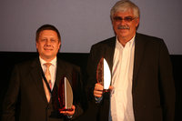

Information Cards at the 2010 European Identity Conference
Munich, Germany -- Information Cards and ICF members were very active in the European Identity Conference (EIC) in Munich this past week. To begin with, ICF board member Kim Cameron accepted the European Identity Award for “Best Innovation” on behalf of Microsoft for its U-Prove minimal disclosure technology. The award was shared with IBM for its similar Idemix technology. Both solutions were lauded by EIC host Kuppinger Cole as pioneering efforts in enhancing online privacy and security.
Mr. Cameron also gave a keynote address, “Federated Directory meets Minimal Disclosure: Mortal Enemies or Soul Mates?” in which he showed how cloud computing, social networks, and enterprise collaboration demand federation of directory information across trust boundaries to create a distributed information fabric. Mr. Cameron then asserted that, by using technologies like U-Prove, these federations can be built to be consistent with the requirements of minimal disclosure.
 ICF board member Jörg Heuer from Deutsche Telekom gave a talk, “From Plastic to Secured Bits - a Wallet for Virtual Cards on the Mobile Phone”. He demonstrated how current SIM card technology, Near Field Communication, and the Information Card identity framework give mobile phones the power to turn into the user-centric identity management device of the future. The concept, which Deutsche Telekom Laboratories has been developing intensively over the past two years, allows credit cards, loyalty cards, access cards, membership cards, tickets and tokens to co-exist on a device that combines SmartCard security with SmartPhone convenience.
ICF board member Jörg Heuer from Deutsche Telekom gave a talk, “From Plastic to Secured Bits - a Wallet for Virtual Cards on the Mobile Phone”. He demonstrated how current SIM card technology, Near Field Communication, and the Information Card identity framework give mobile phones the power to turn into the user-centric identity management device of the future. The concept, which Deutsche Telekom Laboratories has been developing intensively over the past two years, allows credit cards, loyalty cards, access cards, membership cards, tickets and tokens to co-exist on a device that combines SmartCard security with SmartPhone convenience.
“The mobile phone is where the Information Card experience shines the most,” said Mr. Heuer, who demonstrated live mobile phone “mWallets” that feature the same “cover-flow” card selection process made famous by Apple’s iPod, and whose Information Cards can be read directly by contactless card readers exactly like contactless credit cards.
ICF board member Pamela Dingle from Ping Identity gave a talk, “The Fundaments of Effective Identity in the Cloud”, where she discussed ways to avoid the nightmare of maintaining multiple directories in the cloud by leveraging SaaS-based provisioning, authentication, Internet Single Sign-On and authorization including Information Cards.
ICF board member Tony Nadalin of Microsoft gave a presentation on The Open Identity Trust Framework Model white paper published jointly by the ICF, the OpenID Foundation, and the Open Identity Exchange (OIX). This paper is the foundation for the open market identity assurance model launched by OIX at the RSA Conference in March.
ICF Executive Director Drummond Reed appeared on two panels, “Social Data Portability”, moderated by Dave Kearns, and “Identity Assurance - Challenges, Opportunities, Business Perspectives”, moderated by Felix Gaehtgens of Kuppinger Cole. The latter focused on the positive effects that new developments in trust frameworks, such as the introduction of the US ICAM Trust Framework and the launch of OIX, are having on adoption of open identity technologies.
On the final morning of the conference, the ICF hosted a birds-of-a-feather breakfast where ICF DACH chapter members and over 20 other attendees discussed the key differences between the EU and US approaches to governmental identity and identity cards. A key theme of EIC was the impending arrival of the German Ministry of the Interior’s electronic identity card project (“neuer Personal-Ausweis”, or “nPA”), which was also given a European Identity Award. This new digital identity card, slated to be introduced in November, will replace existing ID cards for all 12 million German citizens and can also be used to provide identity credentials for online transactions.
This contrasts sharply with the US government’s Open Identity for Open Government initiative, which relies heavily on identity providers from private industry issuing open identity credentials such as Information Cards and OpenIDs. Attendees agreed that neither approach was “right or wrong” but that they produced significantly different market dynamics in the evolution of identity ecosystems and identity-enabled applications.
The BOF was followed by a workshop in which Oliver Mass from Atos Worldline and Ludovic Francesconi, head of R&D projects at Cartes Bancaires, presented on “Implementing User-Centric Identity Management in Real-World Online Services”. The talk focused on the French FC² project, spearheaded by ICF member ACSEL, which features Information Cards in everyday consumer online transactions such as car rentals.
It included a lively panel featuring Mr. Cameron, ICF board chair Paul Trevithick of Azigo, and ICF board member Axel Nennker of Deutsche Telekom. The panel debated several topics including how much further user experience must be refined and streamlined in order for Information Cards to break out into mainstream adoption; how much of a role mobile phones and smart phones stand to play in that transition; and how much trust frameworks will also be a contributing factor.
Overall, the prevalence of governmental identity cards, smart cards, and card-based identity transactions demonstrated at EIC 2010 led Ms. Dingle to conclude, “I'm convinced that Europe is where Information Cards will flourish first.”